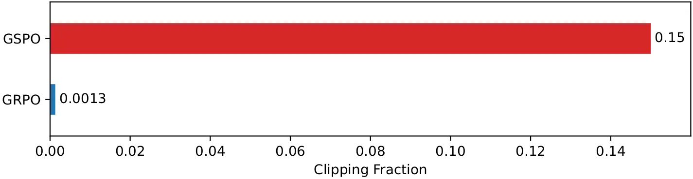
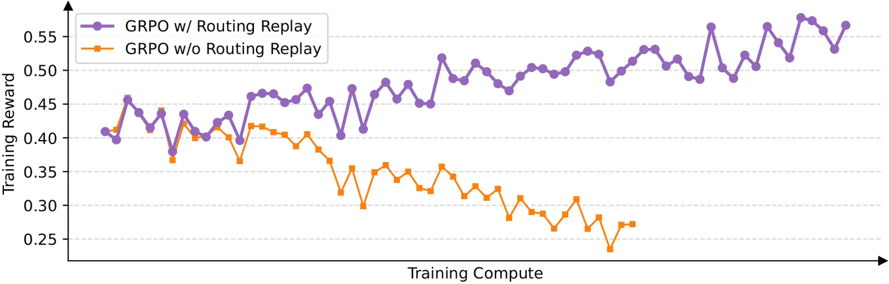
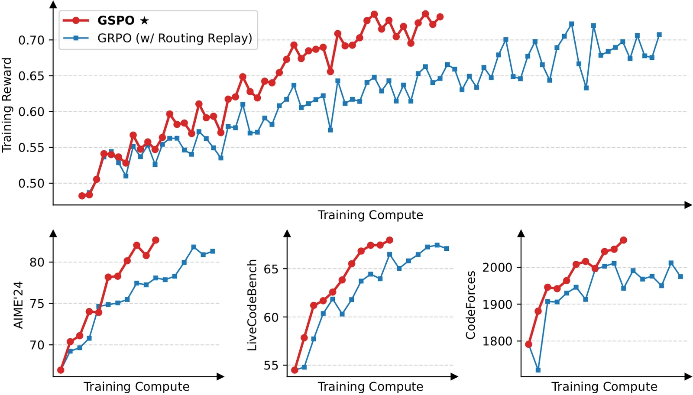

O Problema da Instabilidade em RL para LLMs
O uso de Reinforcement Learning (RL) para treinar Large Language Models (LLMs) tornou-se um paradigma central para escalar capacidades como raciocínio matemático e programação. No entanto, à medida que os modelos crescem em tamanho e complexidade, a estabilidade do treinamento torna-se o principal gargalo. Algoritmos state-of-the-art, como o Group Relative Policy Optimization (GRPO), enfrentam problemas severos de instabilidade, frequentemente resultando em colapso catastrófico do modelo, onde o desempenho degrada irreversivelmente.
Os autores identificam que a raiz dessa instabilidade não é apenas computacional, mas algorítmica. O GRPO e algoritmos similares utilizam uma razão de importância baseada em tokens individuais (token-level importance ratios). Essa abordagem falha em modelos gigantes porque ignora a dependência estrutural da geração de texto. A variância introduzida por essa definição de importância se acumula com o comprimento da resposta e é amplificada pelo mecanismo de clipping, levando a atualizações de política destrutivas.
A Ideia Central: Importância em Nível de Sequência
Para corrigir essa falha fundamental, o paper propõe o Group Sequence Policy Optimization (GSPO). A inovação chave reside na redefinição da razão de importância (importance ratio). Em vez de calcular a razão para cada token $y_t$ isoladamente, o GSPO define a razão baseada na probabilidade conjunta da sequência inteira $y$ dada a consulta $x$. Isso alinha o algoritmo com os princípios teóricos básicos do importance sampling, onde a distribuição de amostragem deve refletir a distribuição alvo globalmente.
Matematicamente, enquanto o PPO clássico e variações como o GRPO usam $w_t(\theta) = \frac{\pi_\theta(y_t|x, y_{<t})}{\pi_{\theta_{old}}(y_t|x, y_{<t})}$, o GSPO opera com a probabilidade da sequência $\pi_\theta(y|x)$. Isso significa que a importância de uma amostra é determinada por quão provável ela é sob a nova política em comparação com a antiga, considerando toda a geração de uma vez, e não passo a passo. Essa mudança reduz drasticamente a variância do estimador de gradiente.
Mecanismo: Clipping e Vantagem em Nível de Sequência
Além da redefinição da razão de importância, o GSPO altera como as recompensas são tratadas. No GRPO, a vantagem (advantage) é frequentemente estimada localmente ou normalizada de forma que pode não refletir consistentemente a qualidade global da resposta. O GSPO computa as recompensas normalizadas como vantagens para múltiplas respostas geradas para a mesma consulta. Isso garante que a recompensa e a otimização estejam alinhadas em nível de sequência.
O mecanismo de clipping, crucial para a estabilidade do PPO, é aplicado em nível de sequência. Em vez de clipping por token, que pode criar inconsistências onde alguns tokens são atualizados agressivamente e outros são restringidos, o GSPO aplica o clipping à razão de importância da sequência inteira. Isso resulta em atualizações de política mais suaves e previsíveis, evitando oscilações violentas nos parâmetros do modelo durante o treinamento.

Estabilidade e Eficiência Empírica
Os experimentos comparativos mostram que o GSPO supera o GRPO em eficiência de treinamento e desempenho final. As curvas de treinamento do GSPO são mais estáveis, sem as quedas abruptas de performance observadas no GRPO em modelos de grande escala. Isso é particularmente evidente em benchmarks de raciocínio, onde a consistência da geração é crítica. A redução da variância permite o uso de taxas de aprendizado mais altas ou mais passos de otimização sem risco de divergência.
Além disso, o GSPO demonstra uma eficiência computacional superior. Ao eliminar a necessidade de estimativas de vantagem complexas por token ou modelos de valor adicionais (como no PPO tradicional), o algoritmo reduz a sobrecarga de memória e computação. Isso simplifica a infraestrutura de RL, tornando-a mais escalável para modelos com bilhões de parâmetros.
O Caso Crítico: Modelos Mixture-of-Experts (MoE)
Um dos contributos mais significativos do GSPO é sua aplicação a modelos Mixture-of-Experts (MoE). Modelos MoE, que ativam diferentes sub-redes para diferentes entradas, são extremamente eficientes, mas notoriamente difíceis de treinar com RL devido à esparsidade das atualizações e à instabilidade na roteamento de experts. O GRPO, quando aplicado a MoEs, frequentemente falha em convergir sem estratégias de estabilização complexas e manuais.
O paper demonstra que o GSPO resolve intrinsicamente esses desafios de estabilidade. A definição de importância em nível de sequência fornece um sinal de gradiente mais robusto para atualizar os parâmetros dos experts, mesmo quando a ativação é esparsa. Isso elimina a necessidade de técnicas auxiliares como 'Routing Replay' ou outros truques de engenharia para manter o treinamento estável, simplificando drasticamente o pipeline de treinamento de MoEs.

Impacto no Qwen3 e Infraestrutura de RL
As melhorias trazidas pelo GSPO foram fundamentais para o desenvolvimento dos modelos Qwen3. A estabilidade do treinamento permitiu aos pesquisadores explorar espaços de hiperparâmetros mais amplos e treinar por mais tempo, resultando em saltos significativos de performance em tarefas de raciocínio. O algoritmo não apenas melhora a performance, mas também simplifica o design da infraestrutura de RL, tornando-a mais acessível e menos propensa a erros de implementação.
A simplificação da infraestrutura é um benefício indireto, mas poderoso. Ao reduzir a necessidade de modelos de valor (como no PPO) e de estratégias de estabilização complexas (como no GRPO para MoEs), o GSPO permite que equipes de pesquisa foquem mais na qualidade dos dados de recompensa e na arquitetura do modelo, em vez de lutar contra a instabilidade numérica.

Limitações e Escopo
Embora o GSPO apresente vantagens claras, o paper foca principalmente em sua aplicação a LLMs autoregressivos treinados com RL. Não estão detalhadas extensivamente as implicações para outros tipos de modelos, como difusores ou redes neurais não sequenciais. Além disso, a comparação principal é feita contra o GRPO; enquanto o PPO é mencionado como baseline teórico, os experimentos empíricos não cobrem uma comparação exaustiva contra todas as variantes recentes de PPO, o que deixaria em aberto a avaliação relativa em cenários específicos de custo-benefício.
Outra consideração é a dependência de verificadores de recompensa precisos. Como em qualquer método de RL baseado em recompensa (RLHF/RLAIF), a qualidade do GSPO é limitada pela qualidade do sinal de recompensa $r(x,y)$. Se o verificador for ruidoso ou enviesado, o GSPO, apesar de sua estabilidade, pode otimizar para recompensas espúrias. O paper não aborda em profundidade como mitigar vieses nos verificadores, focando apenas na estabilidade do otimizador.
Conclusão: Uma Base para RL Escalável
O Group Sequence Policy Optimization (GSPO) representa um passo importante na evolução de algoritmos de RL para LLMs. Ao corrigir a aplicação incorreta do importance sampling, ele oferece uma alternativa estável e eficiente ao GRPO, especialmente para modelos grandes e arquiteturas MoE. A estabilidade intrínseca do GSPO permite que pesquisadores empurrem os limites do raciocínio dos modelos sem o risco constante de colapso de treinamento.
Com o GSPO estabelecido como uma fundação robusta, a comunidade de pesquisa pode focar em escalar o RL de forma mais confiável. As melhorias observadas no Qwen3 servem como um caso de estudo convincente de como correções algorítmicas fundamentais podem levar a avanços significativos em inteligência artificial. O trabalho abre caminho para futuras investigações sobre otimização sequencial e treinamento estável de modelos de linguagem.
O que fica
- GSPO substitui a razão de importância por token (GRPO) por uma baseada na probabilidade da sequência inteira, reduzindo variância.
- O clipping e a recompensa são aplicados em nível de sequência, alinhando otimização e feedback de forma mais coerente.
- O método elimina a necessidade de estratégias complexas de estabilização para modelos Mixture-of-Experts (MoE).
- Resultados empíricos mostram maior eficiência e estabilidade comparado ao GRPO, base para as melhorias do Qwen3.
Paper original: Group Sequence Policy Optimization
Comentários
Nenhum comentário ainda. Seja o primeiro.